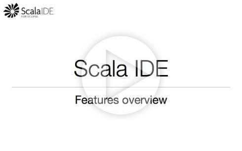

Features
The aim of Scala IDE is to provide a support for Scala development equivalent to the support provided by Eclipse for Java development.
The features overview screencast gives a quick tour of the Scala IDE features.

The following pages provide a description of a list of selected features provided by Scala IDE: